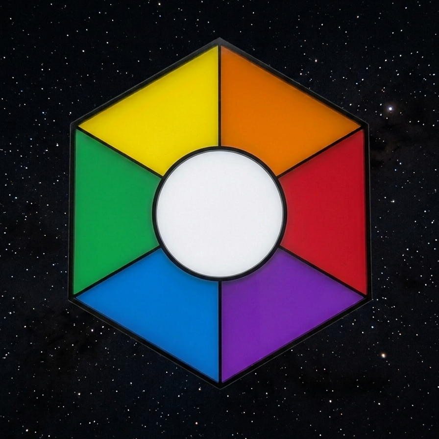

[STRUCTURE NOTES // COMPILED BY I. WHITMAN]
Subject: The Magic/Command Trees
Prerequisite: Read through Book 1 before opening these notes.

Magic is not drawn from willpower, elemental planes or collected mana. It is the control system for technology built into the structure. Throwing a light ball is the same as activating a motion sensitive light. The visitor signals what technology they wish to activate with a number code. See the section on Controlling Structure Technology for more details on signalling. The control command codes are grouped into trees. The number each command sequence begins with defines which tree it belongs to. Each tree has associated with it a number, color, energy, element, verb and shape.
*Note: the verb and shapes are a work in progress and do not always apply. I believe the developers were given them as suggestions and some used them and some did not. --I. W.
| Index | Color | Energy | Element | Verb | Shape |
|---|---|---|---|---|---|
| 0 | White | Light | Light | Hide | Unknown |
| 1 | Yellow | Sound | Air | Reduce | Sphere |
| 2 | Green | Force | Earth | Gather | Plane |
| 3 | Blue | Temperature | Water | Disperse | Circle |
| 4 | Violet | Electricity | Lightning | Apply | Line |
| 5 | Red | Chemistry | Fire | Increase | Point |
| 6 | Orange | Mass or Momentum | Speed | Unknown | Unknown |
*Note: Companion is able to sing a spell that counters gravity and allows him to float to the ground instead of falling.--I. W.